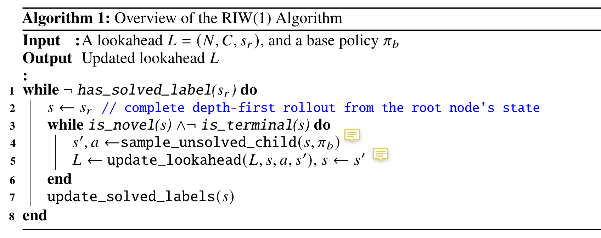
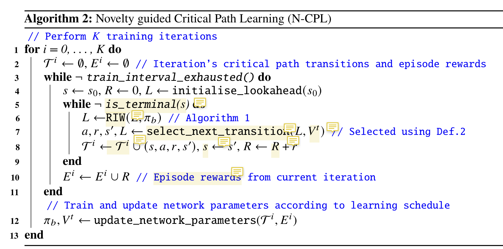

[TOC]
- Title: Width-based Lookaheads with Learnt Base Policies and Heuristics Over the Atari-2600 Benchmark
- Author: Stefan O’Toole et. al.
- Publish Year: 2021
- Review Date: Tue 16 Nov 2021
Summary of paper
This needs to be only 1-3 sentences, but it demonstrates that you understand the paper and, moreover, can summarize it more concisely than the author in his abstract.
This paper proposed a new width-based planning and learning agent that can play Atari-2600 games (though it cannot play Montezuma’s Revenge). The author claimed that width-based planning exploration plus (greedy) optimal MDP policy exploitation is able to achieve better performance than Monte-Carlo Tree Search.
 |
|---|
 |
| The core algorithm for the Atari agent |
The procedue of the width-based planning is the following:
- Form a lookahead tree. Maintaining the tree require the agent to access to the simulator (i.e., the simulator has to provide future states to the agent before it takes the actual move (foresee the future states))
- In order to search for the useful potential next states, the agent use width-based planning to expand the tree.
- the width-based planner check if the state is novel or not, it will explore the novel states
- after deciding which states need to be explored, the pointer will move to the new state and the agent will start a new round of exploration again (loop)
- After it reaches the terminal states or the computational budget is used up, we stop the exploration and the lookahead tree is completed
- We select the action that maximise the accumulated reward in the lookahead tree.
- Now we perform the action in the real game environment (though we has already explored the game environment during planning phase,)
- during testing time, the agent is not able to access to the simulator to build lookahead tree (maybe it can, but in reality, the agent cannot execute actions multiple times and replay the task), thus the agent also used a neural network to mimic the policy during the planning phase.
Some key terms
Width-based planner
Width-based planner must has a lookahead memory space that allows the agent to plan its moves. (Check the procedure explanaion in the previous section)
When the width-based planner plans its moves, it will prefer the states that are novel. IW(1) considers a state in the lookahead as novel if it is the first state within the lookahead to make a particular feature within the feature set true (i.e. novel)
Therefore the width-based planner helps to explore the game environmnent because it always expands the novel states.
After it reached terminal states or the computational budgets are used up, the current exploration round ends.
Novelty features Novelty features is essential for width-based planner. The author suggests several novelty features for the Atari game.
- The pixel difference of the game display (simple and vanilla)
- B-PROST — capture temporal and spatial relationship between the past and present screen pixel
- latent representation of the game display obtained by Variational Auto Encoder (VAE)
- RAM of the game (this is tricky)
Critical Path
The author refered “critical path” as the trajectory fromed by optimal state-action from the lookahead memory.
Learning schedule
The author wants to ensure that the new policy learnt from the current episode is better than the previous policy.
Therefore, the author used Welch’s t-test to test if the performance improves or not. If not, the new parameters learned from this episode will be dropped.
This mechanism is similar to residual connection that can prevent performance loss due to unstable training.
Online Planning
Online planning means the planner tried to find a good path given partial information. it is required to access to the simulator in real time to obtain new information to expand the knowledge
Good things about the paper (one paragraph)
This is not always necessary, especially when the review is generally favorable. However, it is strongly recommended if the review is critical. Such introductions are good psychology if you want the author to drastically revise the paper.
The paper explains in detail the implementation of the width-planning algorithm.
Major comments
Discuss the author’s assumptions, technical approach, analysis, results, conclusions, reference, etc. Be constructive, if possible, by suggesting improvements.
The abstract says “This analysis of thegames provides further insight into the behaviour and performance of the algorithms introduced.”
In fact I would like to get more concrete information about what is the insights. I am not sure if explaining in more details in the abstract helps more.
Minor comments
This section contains comments on style, figures, grammar, etc. If any of these are especially poor and detract from the overall presentation, then they might escalate to the ‘major comments’ section. It is acceptable to write these comments in list (or bullet) form.
A little bit messy when explaning the algorithm
Incomprehension
List what you don’t understand.
There is no clear mathematical proof that width-based-planning is better than tranditional Monte-Carlo Tree Search. I believe this work compete with MCTS but there is not much comparison in this paper.
Potential future work
List what you can improve from the work